Choose a brand
Each brand has its own living style guide — colors, type, components, and voice, documented in full.
This Waay Product Design Studio
The original This Waay brand — product, UX, and systems work. Color, typography, spacing, motion, components, motifs, and voice.
View the style guide

Gridmark Partners
The civic-sector sibling brand. Shares This Waay's visual foundation, with its own civic accent, status colors, and voice for public-sector work.
View the design systemThis Waay is the parent brand behind two related but distinct design systems. This Waay Product Design Studio is the original expression — the source of the core visual language documented here.
Gridmark Partners is the civic-sector sibling brand. It shares the same visual origin — color, type, and spacing all trace back to This Waay — but carries its own name, its own civic accent, and its own voice. It's a sibling brand, not a reskin.
Each brand's own living style guide is the source of truth for its own patterns, tokens, and voice. The two systems are documented and maintained independently, not merged.
Working with either brand — or both
The two systems share an origin but are kept deliberately separate in code. Which guide you need depends on what you're building.
Building for Product Design Studio
Use its style guide and tokens.json as the only source of truth. Don't borrow values from Gridmark's doc, even where they look similar.
Building for Gridmark Partners
Use its design system and tokens.json. Its civic accent, status colors, and 3-layer token architecture are brand-specific — not shared with Product Design Studio.
Working across both
Comparing the two, pitching a new sibling brand, or curious what's intentionally shared versus different? Start with RELATIONSHIP.md before assuming a value should match.